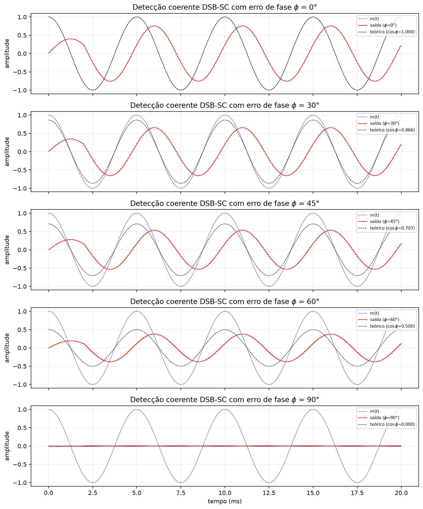
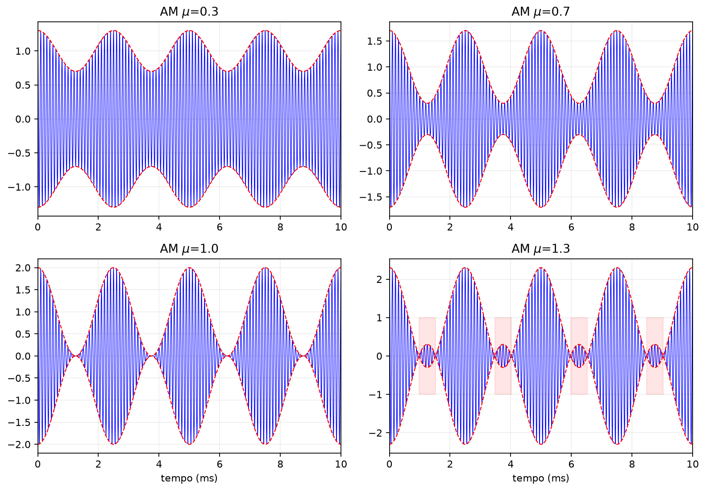
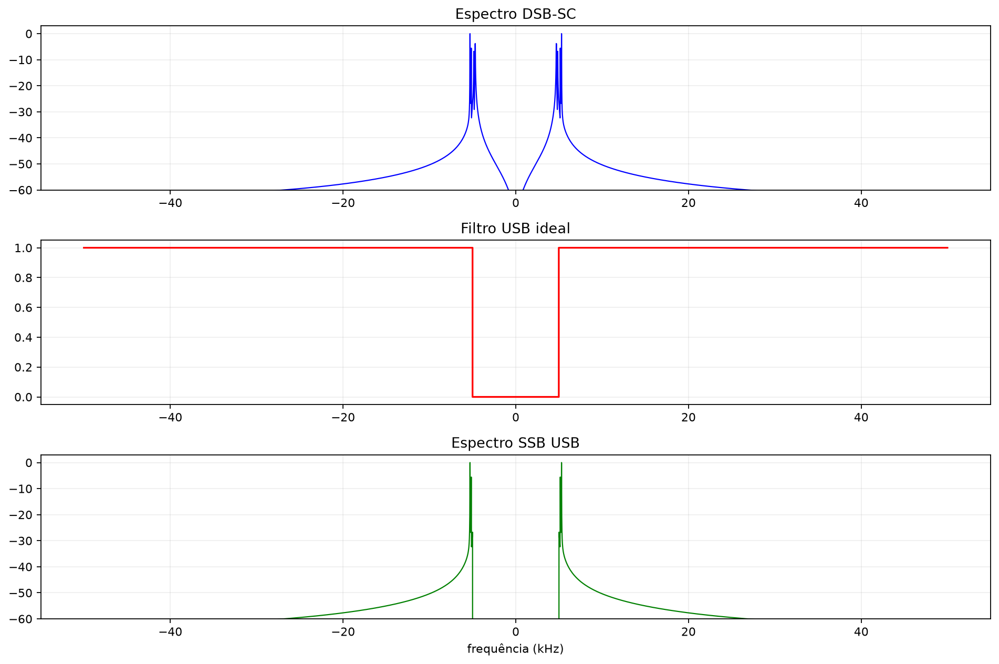
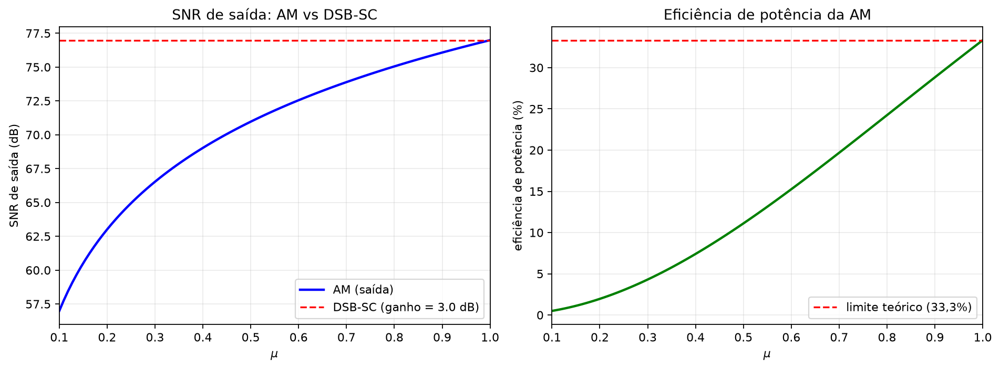
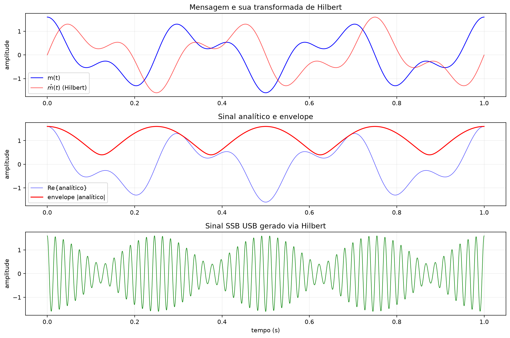
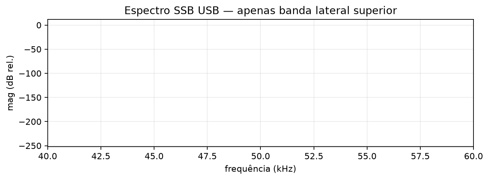
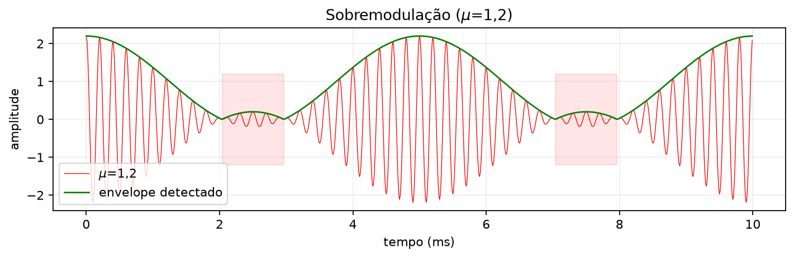

Modulação em Amplitude — Teoria Completa
Antes de começar
Ao final, você deve conseguir derivar os espectros de DSB-SC, AM, SSB e VSB; calcular banda e potência; e escolher um detector coerente ou de envelope. Diagnóstico: qual parte da potência da AM convencional transporta informação? Evidência mínima: prever e depois simular sobremodulação, erro de fase e escolha da constante \(RC\).
Por que modular? Fundamentos da Modulação Analógica
A necessidade fundamental da modulação
A modulação é o processo de variar um ou mais parâmetros de uma onda portadora (senoidal de alta frequência) em função de um sinal de mensagem (banda base, de frequência mais baixa). Este é o pilar de todas as comunicações sem fio — de rádio AM/FM a enlaces de micro-ondas, satélites e sistemas celulares.
Existem três razões físicas e práticas fundamentais:
- Antenas de tamanho prático: O comprimento de onda \(\lambda = c/f\) deve ser comparável às dimensões da antena (tipicamente \(\lambda/4\) ou \(\lambda/2\)). Para um sinal de áudio com \(f_{\text{áudio}} = 1\,\text{kHz}\), teríamos \(\lambda \approx 300\,\text{km}\) — uma antena de \(75\,\text{km}\) é impraticável. Modulado para \(f_c = 100\,\text{MHz}\) (banda FM), \(\lambda = 3\,\text{m}\) e a antena cabe na palma da mão.
- Multiplexação por divisão em frequência (FDM): Vários sinais podem coexistir no mesmo meio físico (espaço livre, cabo coaxial, fibra) se cada um for modulado em uma faixa de frequência diferente. Sem modulação, todos os sinais ocupariam a mesma banda base e se sobreporiam destrutivamente.
- Adaptação ao canal: Diferentes canais têm diferentes características de transmissão (atenuação seletiva, interferências, largura de banda disponível). Modular permite "encaixar" o sinal na janela de frequência onde o canal tem melhor resposta.
um sinal de mensagem \(m(t)\) é dito banda base se seu espectro \(M(f)\) é nulo para \(|f| > W\), onde \(W\) é a largura de banda do sinal. Assumimos sempre \(f_c \gg W\) para que não haja sobreposição espectral.
Representação analítica
Para qualquer sinal real \(s(t)\) de banda estreita, definimos o sinal analítico:
onde \(\hat{s}(t)\) é a transformada de Hilbert:
No domínio da frequência, \(\hat{S}(f) = -j\,\text{sgn}(f)\,S(f)\), e \(\tilde{S}(f) = 2\,U(f)\,S(f)\) (apenas frequências positivas, duplicadas).
O sinal complexo envolvente (baseband equivalente):
Recupera-se \(s(t)\) por:
Representação quadratura (I/Q)
Escrevendo \(\tilde{s}_L(t) = I(t) + j\,Q(t)\):
- \(I(t)\): componente em fase (in-phase);
- \(Q(t)\): componente em quadratura (quadrature);
- \(A(t) = \sqrt{I^2(t) + Q^2(t)}\): envelope instantâneo;
- \(\phi(t) = \arctan(Q/I)\): fase instantânea.
Toda modulação em amplitude usa \(Q(t) = 0\); modulações de fase/frequência manipulam \(Q\) e \(\phi\).
Espectro de modulação e bandas laterais
Para um sinal de mensagem \(m(t)\), real, limitado a \(|f| \leq W\), com transformada de Fourier \(M(f)\), a modulação em amplitude traduz o espectro \(M(f)\) para as vizinhanças de \(\pm f_c\). Este é o efeito da modulação por multiplicação:
Resultado: multiplicar no tempo por \(\cos(2\pi f_c t)\) corresponde a convolucionar o espectro com \(\tfrac{1}{2}[\delta(f-f_c)+\delta(f+f_c)]\), o que produz duas cópias de \(M(f)\), centradas em \(+f_c\) e \(-f_c\).
Para \(m(t)\) real, \(M(f)\) possui simetria conjugada: \(M(-f) = M^*(f)\). As duas bandas laterais (BSL) são, portanto, espelhos complexos conjugados e contêm informação redundante — esta redundância é o que permite a simplificação SSB.
a largura de banda do sinal modulado é sempre o dobro da largura de banda da mensagem, no caso de dupla banda lateral (DSB): \(B_{\text{mod}} = 2W\). SSB reduz para \(B_{\text{mod}} = W\).
Eficiência espectral e energética como critérios de escolha
Ao comparar esquemas de modulação, dois critérios são essenciais:
- Eficiência espectral (\(\eta_f\)): quantos bits/s (ou quanta informação) por hertz de banda ocupada. Quanto menor a banda, melhor.
- Eficiência energética (\(\eta_P\)): fração da potência total do sinal modulado que transporta informação (não é desperdiçada em portadora ou bandas redundantes).
Resultado:
| Esquema | Banda | Ef. espectral | Ef. energética | Complexidade |
|---|---|---|---|---|
| AM (DSB-LC) | \(2W\) | baixa | \(\leq 33\%\) (tom único) | baixa (detector envelope) |
| DSB-SC | \(2W\) | média | \(100\%\) (sem portadora) | média (detector coerente) |
| SSB | \(W\) | alta | \(100\%\) | alta (filtro/Hilbert) |
| VSB | \(\approx W\) | intermediária | intermediária | intermediária |
Esta tabela orienta a escolha do esquema: AM para emissão broadcasting (simplicidade do receptor), DSB-SC para enlace ponto-a-ponto eficiente, SSB para comunicações de longa distância (HF), VSB para vídeo (compromisso prático).
Modulação DSB-SC — Teoria Completa
Definição e modelo
Na modulação DSB-SC (Double Sideband — Suppressed Carrier, ou "bandas laterais duplas com portadora suprimida"), o sinal modulado é simplesmente o produto do sinal de mensagem pela portadora:
onde:
- \(A_c\) é a amplitude da portadora (parâmetro de ganho do modulador);
- \(m(t)\) é o sinal de mensagem, com \(\max|m(t)| \leq 1\) (normalizado);
- \(f_c \gg W\) é a frequência da portadora.
o prefixo "SC" (suppressed carrier) indica que nenhuma portadora discreta aparece no espectro — toda a potência do sinal modulado está contida nas bandas laterais, que carregam informação.
Dedução completa do espectro
Aplicamos a transformada de Fourier a \(s_{\text{DSB-SC}}(t) = A_c\,m(t)\,\cos(2\pi f_c t)\). Usamos a propriedade da multiplicação:
Sabemos que \(\cos(2\pi f_c t) \;\xrightarrow{\mathcal{F}}\; \dfrac{1}{2}\bigl[\delta(f-f_c)+\delta(f+f_c)\bigr]\). Logo:
Interpretação física: o espectro de \(m(t)\) é "copiado" duas vezes: uma cópia deslocada para \(+f_c\) (banda lateral superior) e outra para \(-f_c\) (banda lateral inferior). Como \(M(f)\) é zero para \(|f| > W\), o espectro modulado ocupa a faixa \([f_c-W,\;f_c+W]\) e \([-f_c-W,\;-f_c+W]\).
Largura de banda: a banda ocupada em cada lado é \(W\), mas a banda total (do mínimo ao máximo frequência positiva) é:
Potência do sinal DSB-SC
A potência média de um sinal real \(s(t)\) com carga de referência \(1\,\Omega\) é:
Para \(s_{\text{DSB-SC}}(t) = A_c\,m(t)\,\cos(2\pi f_c t)\):
O segundo termo se anula por média temporal (o termo em \(2f_c\) oscila muito mais rápido que \(m^2(t)\), e sua média tende a zero para \(f_c \gg W\)). Definindo \(P_m = \langle m^2(t)\rangle\) como a potência do sinal de mensagem:
em DSB-SC, 100% da potência transporta informação (não há componente de portadora separada). Esta é a vantagem fundamental sobre AM convencional.
Representação no plano I/Q
Para DSB-SC, comparando com a forma quadratura \(s(t) = I(t)\cos(2\pi f_c t) - Q(t)\sin(2\pi f_c t)\):
- Componente I: \(\boxed{I(t) = A_c\,m(t)}\)
- Componente Q: \(\boxed{Q(t) = 0}\)
O sinal complexo envolvente é puramente real:
e o envelope instantâneo é \(|\tilde{s}_L(t)| = A_c|m(t)|\). Em DSB-SC, o envelope cruza zero sempre que \(m(t)\) cruza zero — isso significa que o sinal inverte de fase a cada zero, e um detector de envelope simples não funciona (explicado na Seção “Detecção de Envelope de AM”).
Transformada de Hilbert de um sinal DSB-SC
No domínio da frequência: \(\hat{S}(f) = -j\,\text{sgn}(f)\,S(f)\). Para DSB-SC concentrado em \(\pm f_c\):
- \(f > 0\): \(\hat{S}(f) = -j\,S(f)\)
- \(f < 0\): \(\hat{S}(f) = +j\,S(f)\)
Invertendo:
Sinal analítico: \(\tilde{s}(t) = A_c\,m(t)\,e^{j2\pi f_c t}\), envelope complexo \(\tilde{s}_L(t) = A_c\,m(t)\) — confirmando Seção “Representação no plano I/Q”.
Exemplo numérico
Exemplo: mensagem \(m(t) = \cos(2\pi\cdot 1000\,t)\), \(f_c = 100\,\text{kHz}\), \(A_c = 1\).
Usando a identidade trigonométrica \(\cos A\cos B = \tfrac{1}{2}[\cos(A-B)+\cos(A+B)]\):
Espectro: duas linhas em \(\pm 99\,\text{kHz}\) e \(\pm 101\,\text{kHz}\), cada uma com amplitude \(1/2\).
Potência: \(P_m = \langle\cos^2(2\pi\cdot 10^3\,t)\rangle = 1/2\), logo \(P_s = \tfrac{1}{2}\cdot\tfrac{1}{2} = \tfrac{1}{4}\). Cada banda lateral contribui com \(1/8\).
note que não há nenhuma linha espectral em \(f_c = 100\,\text{kHz}\) — a portadora está completamente suprimida. Esta é a assinatura espectral do DSB-SC.
Detecção Coerente de DSB-SC
Princípio da detecção coerente (síncrona)
Para recuperar \(m(t)\) de \(s_{\text{DSB-SC}}(t) = A_c\,m(t)\,\cos(2\pi f_c t)\), o método mais direto é multiplicar pelo mesmo coseno que foi usado na modulação e filtrar:
O fator \(2\) é introduzido para simplificar a recuperação (compensar o fator \(1/2\) da multiplicação trigonométrica).
Dedução completa da recuperação
Desenvolvendo:
Usando \(\cos^2\theta = \frac{1}{2}\bigl[1+\cos(2\theta)\bigr]\):
O segundo termo é um sinal centrado em \(2f_c\). Passando por um filtro passa-baixas \(H_{\text{LP}}(f)\) com largura de corte \(B_{\text{LP}} \geq W\):
A mensagem é recuperada com ganho \(A_c\). Um amplificador com ganho \(1/A_c\) a seguir fornece a saída final \(m(t)\).
Efeito do erro de fase \(\phi\)
Na prática, o oscilador local do receptor pode não estar perfeitamente sincronizado em fase com a portadora. Suponha que o oscilador local seja \(\cos(2\pi f_c t + \phi)\), com erro de fase \(\phi\):
Usando \(2\cos A\cos B = \cos(A-B) + \cos(A+B)\):
Após o filtro passa-baixas:
Análise de perda:
- \(\phi = 0\): recuperação perfeita \(y(t) = A_c\,m(t)\).
- \(\phi = 90° = \pi/2\): \(y(t) = 0\) — perda total do sinal.
- \(\phi = 180° = \pi\): \(y(t) = -A_c\,m(t)\) — recuperação com inversão de polaridade (geralmente tolerável).
A perda de potência devido ao erro de fase é:
Ou seja, a potência do sinal recuperado é \(\cos^2\phi\) vezes a potência original. Para \(\phi = 30°\), por exemplo: \(\cos^2 30° = 3/4 = 75\%\) da potência é mantida.
Importante: este é o principal problema da detecção coerente — exige que o receptor gere uma portadora local sincronizada em fase com a portadora original. Qualquer erro de fase causa atenuação proporcional a \(\cos\phi\).
Efeito do erro de frequência \(\Delta f\)
Suponha agora que o oscilador local tenha frequência \(f_c + \Delta f\), com \(\Delta f \neq 0\):
Após o filtro passa-baixas:
Análise: o sinal recuperado é multiplicado por um batimento \(\cos(2\pi\Delta f\,t)\). Se \(\Delta f\) é pequeno (da ordem de \(W\)), o batimento se manifesta como uma flutuação audível na voz (em áudio) ou como cintilação na imagem (em vídeo). Se \(\Delta f\) é grande, o batimento está fora da banda de interesse e pode ser filtrado.
Exemplo: para áudio (\(W = 4\,\text{kHz}\)), um erro de \(\Delta f = 50\,\text{Hz}\) produz um batimento de \(50\,\text{Hz}\) na saída — perceptível como zumbido. Erros de \(f_c\) devem ser mantidos abaixo de \(\sim 10\%\) de \(W\).
Prova da perda de potência por erro de fase
seja \(m(t)\) um processo estacionário com potência \(P_m\). A potência do sinal recuperado com erro de fase \(\phi\) é:
Sem erro de fase (\(\phi = 0\)):
A fração de potência mantida é:
A fração de potência perdida é:
\(\blacksquare\)
Recuperação da portadora: Costas Loop
Em sistemas reais, a portadora não é transmitida (é suprimida), mas o receptor precisa de uma referência de fase. Uma solução é o Costas Loop (ou Costas PLL), que é um Phase-Locked Loop (PLL) especializado para sinais DSB-SC:
O Costas Loop usa um multiplicador (detector de fase) que compara o sinal recebido com um VCO (Voltage-Controlled Oscillator) local. O erro de fase é filtrado e realimentado para controlar o VCO, forçando \(\phi \to 0\). A topologia do Costas Loop é particularmente eficiente para DSB-SC porque o sinal de erro é proporcional a \(\sin(2\phi)\), proporcionando forte ação corretiva.
Limitações práticas
A detecção coerente de DSB-SC apresenta duas desvantagens fundamentais:
- Complexidade do oscilador local: requer um VCO estável, com PLL ou Costas Loop para rastrear a fase da portadora. Isso aumenta o custo e a complexidade do receptor.
- Sensibilidade a desvanecimento seletivo: se o canal introduz desvanecimento seletivo em frequência, a recuperação da portadora pode falhar em certas condições.
Estas desvantagens motivam o uso de AM convencional (DSB-LC), onde a portadora é transmitida em alta potência e pode ser usada diretamente como referência de fase pelo detector de envelope — sem necessidade de PLL.
Modulação AM Convencional (DSB-LC)
Definição e modelo
Na modulação AM convencional (Double Sideband — Large Carrier, ou "bandas laterais duplas com portadora forte"), adicionamos uma componente DC à mensagem antes de modular:
onde:
- \(A_c\) é a amplitude da portadora;
- \(\mu\) é o índice de modulação (ou profundidade de modulação);
- \(m_n(t)\) é o sinal de mensagem normalizado: \(\max|m_n(t)| = 1\).
o sinal normalizado é \(m_n(t) = \dfrac{m(t)}{\max|m(t)|}\). Para um tom único \(m(t) = A_m\cos(2\pi f_m t)\), temos \(m_n(t) = \cos(2\pi f_m t)\).
O termo \(1 + \mu\,m_n(t)\) deve ser sempre não-negativo para que o envelope seja não-negativo. Isso implica:
Quando \(\mu > 1\), ocorre sobremodulação: \(1 + \mu\,m_n(t)\) cruza zero, o envelope se inverte e o detector de envelope produz distorção severa.
Espectro da AM
Expandindo \(s_{\text{AM}}(t)\):
O primeiro termo é a portadora pura; o segundo termo é um sinal DSB-SC modulando a portadora com amplitude \(\mu A_c\).
Aplicando a transformada de Fourier:
O espectro AM contém três componentes:
- Portadora: duas deltas em \(\pm f_c\), cada uma com peso \(A_c/2\).
- BSL superior (USB): \(M_n(f)\) copiada para \(+f_c\), com peso \(\mu A_c/2\).
- BSL inferior (LSB): \(M_n(f)\) copiada para \(-f_c\), com peso \(\mu A_c/2\).
A banda total ocupada é \(B_{\text{AM}} = 2W\) (mesma do DSB-SC).
Análise de potências
Considere carga de \(1\,\Omega\). A potência de cada componente:
Portadora:
Bandas laterais (DSB-SC com amplitude \(\mu A_c\)):
onde \(P_{m_n} = \langle m_n^2(t)\rangle\) é a potência do sinal normalizado. Para \(m_n(t) = \cos(2\pi f_m t)\), \(P_{m_n} = 1/2\).
Potência total:
Eficiência de potência
A eficiência de potência é a fração da potência total que está nas bandas laterais (portando informação):
Para o caso de tom único (\(m_n(t) = \cos(2\pi f_m t)\)), \(P_{m_n} = 1/2\):
Teorema da eficiência máxima da AM: para tom único com \(\mu = 1\) (máxima modulação sem sobremodulação):
isto significa que mesmo no caso melhor, \(2/3\) da potência é desperdiçada na portadora — uma enorme ineficiência. Esta é a principal crítica à modulação AM convencional e a motivação para DSB-SC e SSB.
Análise de potências por componente (tom único)
Para \(m_n(t) = \cos(2\pi f_m t)\), \(\mu = 1\):
Usando \(\cos A\cos B = \tfrac{1}{2}[\cos(A-B)+\cos(A+B)]\):
Potências (carga \(1\,\Omega\)):
- Portadora: \(P_c = A_c^2/2\)
- BSL inferior (LSB): \(P_{\text{LSB}} = \bigl(\tfrac{A_c}{2}\bigr)^2\cdot\tfrac{1}{2} = \tfrac{A_c^2}{8}\)
- BSL superior (USB): \(P_{\text{USB}} = \tfrac{A_c^2}{8}\)
Total: \(P_T = \dfrac{A_c^2}{2} + \dfrac{A_c^2}{8} + \dfrac{A_c^2}{8} = \dfrac{3A_c^2}{4}\)
Eficiência: \(\eta_P = \dfrac{A_c^2/4}{3A_c^2/4} = \dfrac{1}{3}\) — confirmado.
Importante: a portadora carrega \(66{,}7\%\) da potência total e zero informação. As duas laterais, juntas com \(33{,}3\%\), carregam toda a informação — e são redundantes (para \(m(t)\) real).
Sobremodulação: distorção e problemas
Quando \(\mu > 1\), o envelope \(1+\mu\,m_n(t)\) torna-se negativo em alguns pontos. Como o detector de envelope (diodo+RC) não pode seguir valores negativos, o envelope detectado é o módulo \(|1+\mu\,m_n(t)|\), produzindo distorção severa:
- Cruzamento de zero: o envelope passa por zero, invertendo a fase do sinal modulado em \(180°\).
- Distorção não-linear: o detector recupera \(|1+\mu\,m_n(t)| \neq 1+\mu\,m_n(t)\), introduzindo harmônicos que não estavam na mensagem original.
- Interferência entre canais: a distorção gera conteúdo espectral que se espalha além da banda \(2W\), interferindo em canais adjacentes.
a sobremodulação ocorre quando \(\mu > 1\), isto é, quando a amplitude da mensagem excede a amplitude da portadora: \(\mu\,A_c > A_c\).
Detecção de Envelope de AM
Princípio do detector de envelope
O detector de envelope (ou detector de pico) é o receptor mais simples para modulação AM. Consiste basicamente de:
- Um diodo (retificador de meia onda ou onda completa);
- Um circuito RC passa-baixas (filtro de descarga).
O diodo retifica o sinal (remove a metade negativa), e o capacitor C carrega até o pico do envelope e descarrega através de R com constante de tempo \(\tau = RC\).
Dedução da condição de RC
Para que o detector funcione corretamente, a constante de tempo \(RC\) deve satisfazer duas condições opostas:
Condição 1 — Filtrar a portadora (R grande o suficiente para não "ver" a oscilação em \(f_c\)):
Isto garante que o capacitor não descarregue significativamente durante um ciclo da portadora.
Condição 2 — Rastrear a mensagem (R pequeno o suficiente para acompanhar variações rápidas de \(m(t)\)):
Isto garante que o capacitor descarregue o suficiente entre picos consecutivos do envelope para seguir as variações da mensagem.
Condição combinada:
Esta janela de projeto é mais ampla quanto maior for a relação \(f_c/W\) (quanto mais alta for a portadora em relação à largura de banda da mensagem).
Teorema da condição anti-diagonal clipping
para sinal AM tonal \(s_{\text{AM}}(t) = A_c[1+\mu\cos(2\pi f_m t)]\cos(2\pi f_c t)\), a condição para evitar diagonal clipping é:
onde \(\omega_m = 2\pi f_m\).
o envelope \(E(t) = A_c[1+\mu\cos(\omega_m t)]\) desce com taxa \(|dE/dt| = A_c\,\mu\,\omega_m\,|\sin(\omega_m t)|\). A descarga do capacitor tem taxa \(E(t)/RC\). No pior caso (\(\cos(\omega_m t) = -\mu\), \(|\sin| = \sqrt{1-\mu^2}\)):
\(\blacksquare\)
para \(\mu \to 1\), limite \(\to 0\) — qualquer RC causa clipping. Na prática, \(\mu \leq 0{,}8\).
Distorção por negative peak clipping
Outro tipo de distorção ocorre quando o resistor de carga \(R_L\) é conectado ao detector (por exemplo, através de um capacitor acoplador). A descarga do capacitor através do circuito de carga pode causar o negative peak clipping: quando o envelope sobe rapidamente (carga rápida via diodo), mas desce lentamente (descarga através de \(R_L\)), os picos negativos do sinal são cortados.
SNR de saída do detector de envelope
Para um detector de envelope em AM operando acima do limiar, isto é, com razão portadora-ruído suficientemente alta para linearizar o módulo, a SNR de saída é aproximadamente:
onde \(\text{SNR}_{\text{in}}\) é a razão sinal-ruído na entrada do detector (banda \(2W\) centrada em \(f_c\)).
Para tom único com \(\mu = 1\): \(\text{SNR}_{\text{out}} \approx \tfrac{1}{3}\,\text{SNR}_{\text{in}}\) — pior que a entrada (ganho de SNR \(< 1\)).
Comparação: o DSB-SC coerente tem \(\text{SNR}_{\text{out}} = 2\,\text{SNR}_{\text{in}}\) (ganho de 3 dB), superior ao AM. Porém, o AM não precisa de oscilador local sincronizado — é uma troca entre desempenho e complexidade.
Exemplo: projeto de detector de envelope para AM broadcast
Exemplo: estação de AM broadcast, \(f_c = 1000\,\text{kHz}\), largura de áudio \(W = 5\,\text{kHz}\), \(\mu = 0{,}8\).
Condição de RC:
Condição anti-diagonal clipping (\(\mu = 0{,}8\), \(f_m = 5\,\text{kHz}\)):
Escolha prática: \(R = 5\,\text{k}\Omega\), \(C = 0{,}0047\,\mu\text{F}\), então \(RC = 23{,}5\,\mu\text{s}\) — dentro da janela e próximo do limite anti-clipping.
Modulação SSB — Teoria e Implementação
Redundância das bandas laterais em DSB
Em DSB-SC, as duas bandas laterais são espelhos conjugados: \(S(f_c+f) = S^*(f_c-f)\) para \(m(t)\) real. Cada banda lateral contém informação completa sobre \(m(t)\). Transmitir ambas é redundante — podemos eliminar uma delas sem perda de informação.
a modulação SSB (Single Sideband) transmite apenas uma das bandas laterais, economizando metade da banda e metade da potência em relação ao DSB-SC.
Transformada de Hilbert e seu espectro
A transformada de Hilbert de um sinal \(m(t)\) é definida como:
No domínio da frequência:
O filtro da transformada de Hilbert tem resposta em frequência:
Este filtro desloca todas as componentes de frequência positiva por \(-90°\) e todas as de frequência negativa por \(+90°\).
Propriedades importantes da transformada de Hilbert:
- \(\hat{\hat{m}}(t) = -m(t)\) (aplicar duas vezes inverte o sinal);
- \(\hat{m}(t)\) e \(m(t)\) têm a mesma energia: \(\int|\hat{m}(t)|^2\,dt = \int|m(t)|^2\,dt\);
- \(\langle m(t)\,\hat{m}(t)\rangle = 0\) para sinais ergódicos (são ortogonais).
Dedução do sinal SSB
A partir do sinal analítico \(\tilde{m}(t) = m(t) + j\,\hat{m}(t)\) (espectro nulo para \(f < 0\)):
Este sinal tem espectro concentrado apenas em \(f > f_c\) — banda lateral superior (USB).
De modo análogo (parte imaginária):
contém apenas banda lateral inferior (LSB).
Portanto:
Sinal menos = USB, mais = LSB. USB = "transmitir frequências acima de \(f_c\)".
Espectro SSB
Para USB:
Simplificando: para \(f > 0\), apenas a cópia de \(M(f)\) deslocada para \(f_c\) (para \(f \in [f_c,\,f_c+W]\)). Para \(f < 0\), apenas a cópia conjugada deslocada para \(-f_c\).
Largura de banda:
Metade do DSB-SC! Esta é a principal vantagem da SSB.
Potência e eficiência da SSB
A potência do sinal SSB (tomando \(\hat{m}(t)\) como ortogonal a \(m(t)\)):
Comparando com DSB-SC: \(P_{\text{DSB}} = \dfrac{A_c^2}{2}\,P_m\). Logo:
A SSB usa metade da potência do DSB-SC (transmite apenas uma banda lateral).
Teorema da eficiência de SSB: como não há portadora e não há redundância, toda a potência transporta informação:
Esta é a máxima eficiência possível em modulação em amplitude.
Método do filtro (projeto do filtro passa-banda)
O método mais direto de gerar SSB é:
- Gerar DSB-SC: \(s_{\text{DSB}}(t) = A_c\,m(t)\,\cos(2\pi f_c t)\).
- Filtrar por um filtro passa-banda seletivo que rejeita uma das bandas laterais.
O filtro deve ter resposta ideal:
Desafio de projeto: o filtro deve ter uma transição extremamente íngreme entre a banda lateral transmitida e a rejeitada. Para \(f_c = 1\,\text{MHz}\) e \(W = 5\,\text{kHz}\), a transição ocorre em apenas \(10\,\text{kHz}\) (de \(f_c\) a \(f_c+W\) para a outra lateral). Isto exige filtros de alta ordem (centenas de elementos para RF).
Importante: este método funciona bem quando \(W\) é pequena em relação a \(f_c\) (alta relação \(f_c/W\)). Para mensagens de banda base ampla (como áudio telefônico ou vídeo), o filtro se torna impraticável.
Método de Weaver para geração de SSB
O método de Weaver (1956) evita o filtro íngreme usando duas etapas de mixagem em frequências intermediárias:
Passo 1: Modular \(m(t)\) em uma frequência intermediária \(f_1\) (baixa, tipicamente alguns kHz):
Passo 2: Modular novamente, esta vez em \(f_2\) (também baixa, mas diferente de \(f_1\)):
Passo 3: Filtrar por um filtro passa-baixa simples (a banda lateral é bem separada em \(f_2 \pm f_1\)).
Passo 4: Modular o resultado final para a frequência de transmissão \(f_c\).
Este método é amplamente usado em receptores de rádio amador porque os filtros operam em frequências baixas, onde são mais fáceis de implementar.
Modulação VSB — Compromisso Prático
Por que VSB?
A SSB requer um filtro de transição extremamente íngreme. Para sinais com conteúdo de baixa frequência significativo (como vídeo, onde o espectro vai até DC), cortar abruptamente a banda lateral próxima a \(f_c\) é praticamente impossível com filtros realizáveis.
A modulação VSB (Vestigial Sideband) resolve este problema transmitindo uma banda lateral completa e um "vestígio" (vestige) da outra banda lateral.
Dedução da condição de simetria VSB
Seja \(H(f)\) a resposta em frequência do filtro de banda lateral usado na geração VSB. O sinal modulado é:
onde \(h(t)\) é a resposta ao impulso do filtro. No domínio da frequência:
Para recuperação sem distorção (detecção coerente), a soma das respostas do filtro nas frequências simétricas em torno de \(f_c\) deve ser constante:
Esta é a condição de vestígio simétrico. Ela garante que, ao multiplicar por \(\cos(2\pi f_c t)\) e filtrar por passa-baixas, o sinal original seja recuperado sem distorção.
Interpretação: o vestígio da banda lateral rejeitada compensa a atenuação da banda lateral transmitida próxima a \(f_c\). A simetria do vestígio assegura que a resposta total seja plana na banda de interesse.
Aplicação: TV analógica
A aplicação mais famosa de VSB é a transmissão de vídeo em TV analógica (NTSC, PAL, SECAM):
- O sinal de vídeo (luminância) tem espectro de DC até \(\sim 4{,}2\,\text{MHz}\) (NTSC) ou \(\sim 5\,\text{MHz}\) (PAL).
- Transmitir SSB seria impraticável (filtro íngreme para conteúdo de baixa frequência).
- VSB transmite a USB completa e um vestígio de \(\sim 1{,}25\,\text{MHz}\) da LSB.
- Largura de banda total: \(\sim 6\,\text{MHz}\) por canal (NTSC).
Largura de banda VSB
onde \(f_{\text{vestígio}}\) é a largura da faixa de transição (tipicamente \(0{,}5W\) a \(1{,}25W\)). Para vídeo NTSC: \(W = 4{,}2\,\text{MHz}\), \(f_{\text{vestígio}} \approx 1{,}25\,\text{MHz}\), \(B_{\text{VSB}} \approx 6\,\text{MHz}\).
Detecção VSB
A recuperação VSB pode ser feita por:
- Detecção coerente (mesmo método DSB-SC, multiplicar por \(\cos(2\pi f_c t)\) e filtrar).
- Detecção de envelope (apenas se a portadora for transmitida em nível suficiente, como na TV analógica, onde a portadora de vídeo é transmitida com \(\mu \approx 0{,}7\)).
Comparação completa: DSB vs SSB vs VSB vs AM
| Propriedade | AM (DSB-LC) | DSB-SC | SSB | VSB |
|---|---|---|---|---|
| Largura de banda | \(2W\) | \(2W\) | \(W\) | \(W+f_v\) |
| Potência de portadora | \(A_c^2/2\) | \(0\) | \(0\) (ou pequena) | \(A_c^2/2\) (ou suprimida) |
| Eficiência energética | \(\leq 33{,}3\%\) | \(100\%\) | \(100\%\) | \(\approx 60\text{--}75\%\) |
| Complexidade do TX | baixa | média | alta | intermediária |
| Complexidade do RX | muito baixa | alta (coerente) | alta (coerente) | baixa/média |
| Aplicação típica | Rádio broadcasting | Enlace ponto-a-ponto | HF, telecom | Vídeo/TV |
Análise de Ruído em Modulação Analógica
Modelo de ruído aditivo branco gaussiano (AWGN)
Considere um canal com ruído aditivo branco gaussiano (AWGN): \(n(t)\) é um processo estacionário com espectro de potência constante:
onde \(N_0\) é a densidade espectral unilateral de potência (W/Hz). A potência de ruído na banda de recepção de largura \(B\) é:
SNR na entrada do receptor
A potência do sinal recebido (assumindo atenuação de canal unitária para simplificar) é \(P_R\). O ruído na banda de recepção (banda do sinal modulado) é \(N_0\,B\). Logo:
DSB-SC: SNR de saída
Para DSB-SC, o receptor coerente tem largura de banda de base \(W\). O ruído na banda de recepção (passa-banda \(2W\)) tem potência \(N_0\cdot 2W\). Após a mixagem e o filtro passa-baixas de banda \(W\), o ruído de saída é \(N_0\cdot W\).
O sinal de saída tem potência \(A_c^2 P_m\) (com ganho do oscilador local \(= 2\), conforme Seção “Detecção Coerente de DSB-SC”).
Resultado:
o ganho de SNR é \(2\) (3 dB) — o detector coerente de DSB-SC melhora a razão sinal-ruído em 3 dB.
AM: SNR de saída
Para AM com índice de modulação \(\mu\) e sinal normalizado \(m_n(t)\), a potência do sinal é \(P_T = \tfrac{A_c^2}{2}(1+\mu^2 P_{m_n})\). Na banda de recepção \(2W\), o ruído é \(N_0\cdot 2W\).
O sinal de informação (bandas laterais) tem potência \(P_{\text{SB}} = \tfrac{\mu^2 A_c^2}{2}P_{m_n}\).
Resultado:
Para tom único (\(P_{m_n} = 1/2\)) com \(\mu = 1\): \(\text{SNR}_{\text{out}} = \tfrac{1}{3}\,\text{SNR}_{\text{in}}\) — piora de 4,77 dB em relação à entrada.
Comparação: usando as definições desta seção, para tom único e \(\mu=1\) o fator é 2 para DSB-SC e \(1/3\) para AM, uma razão 6 ou \(7{,}78\) dB — não “aproximadamente 10 dB”. A vantagem do AM é a simplicidade do detector de envelope.
SSB: SNR de saída
Para SSB, a banda de recepção é \(W\) (metade do DSB). O ruído na entrada é \(N_0\cdot W\) (metade do DSB). Após a detecção coerente, o ruído de saída é \(N_0\cdot W/2\) (filtro passa-baixas de banda \(W/2\) na baseband equivalente).
Resultado: o SNR de saída da SSB é idêntico ao do DSB-SC:
A SSB obtém a mesma qualidade em ruído com metade da banda do DSB-SC — a razão pela qual é preferida em enlaces de longa distância HF.
FM: Ganho de processamento e limiar
A modulação FM troca largura de banda por SNR. O ganho de processamento:
onde \(\beta = \Delta f/W\) é o índice de modulação FM.
Para \(\beta = 5\): ganho \(= 450\) (\(26{,}5\,\text{dB}\)).
Limiar FM (degradação abrupta abaixo de):
Trade-off FM: \(B_{\text{FM}} \approx 2(\beta+1)W\) (Carson). Maior \(\beta\) = mais banda, mais SNR. WBFM (\(\beta \gg 1\)): SNR excelente, banda larga. NBFM (\(\beta \ll 1\)): banda estreita, SNR modesto.
Tabela comparativa de ruído
| Modulação | SNR\(_{\text{out}}\)/SNR\(_{\text{in}}\) | Banda | Complexidade de RX |
|---|---|---|---|
| AM (DSB-LC) | \(\tfrac{\mu^2 P_{m_n}}{1+\mu^2 P_{m_n}}\) | \(2W\) | muito baixa |
| DSB-SC | \(2\) | \(2W\) | alta (coerente) |
| SSB | \(2\) | \(W\) | alta (coerente) |
| FM (\(\beta \gg 1\)) | \(3\beta^2(\beta+1)\) | \(2(\beta+1)W\) | média/alta |
| VSB | \(\approx 2\) (coerente) | \(W+f_v\) | intermediária |
Exercícios Resolvidos em Python
Protocolo computacional
Objetivo: confrontar espectro, potência e recuperação de DSB-SC, AM e SSB. Amostragem: use \(f_s\) suficientemente maior que \(2(f_c+W)\) e declare a normalização da FFT. Validação: meça potência no tempo, confira a eficiência teórica e quantifique erro de fase, sobremodulação e rejeição da banda lateral.
Exercício 1: Simulação DSB-SC com detecção coerente e erro de fase
Simule a modulação DSB-SC e a detecção coerente com diferentes erros de fase \(\phi\), mostrando o efeito da atenuação por \(\cos\phi\).
import numpy as np
import matplotlib.pyplot as plt
fs = 100_000 # taxa de amostragem
fc = 5_000 # frequência da portadora
fm = 200 # frequência da mensagem
T = 0.02 # duração total
t = np.arange(0, T, 1/fs)
m = np.cos(2*np.pi*fm*t) # mensagem (tom único)
Ac = 1.0
# --- DSB-SC ---
s_dsb = Ac * m * np.cos(2*np.pi*fc*t)
# --- Detecção coerente com erro de fase phi ---
phis = [0, np.pi/6, np.pi/4, np.pi/3, np.pi/2]
fig, axes = plt.subplots(len(phis), 1, figsize=(10, 12), sharex=True)
for ax, phi in zip(axes, phis):
# Misturador: multiplicar por 2*cos(2*pi*fc*t + phi)
mixer = 2 * np.cos(2*np.pi*fc*t + phi)
r = s_dsb * mixer
# Filtro passa-baixas: média móvel com janela de 200 amostras
h_lp = np.ones(200) / 200
y = np.convolve(r, h_lp, mode='full')[:len(t)]
# Teórico: y = Ac * m * cos(phi)
y_theory = Ac * m * np.cos(phi)
ax.plot(t*1e3, m, 'b', lw=0.7, alpha=0.6, label='m(t)')
# Não normalize cada curva separadamente: isso esconderia a perda cos(phi)
# e causaria divisão por zero em phi=90°. Ac=1 já fornece escala comum.
ax.plot(t*1e3, y, 'r', lw=0.9,
label=fr'saída ($\phi$={np.rad2deg(phi):.0f}°)')
ax.plot(t*1e3, y_theory, 'k--', lw=0.7,
label=fr'teórico ($\cos\phi$={np.cos(phi):.3f})')
ax.set_ylabel('amplitude')
ax.legend(fontsize=7, loc='upper right')
ax.grid(alpha=0.2)
ax.set_title(fr'Detecção coerente DSB-SC com erro de fase $\phi$ = {np.rad2deg(phi):.0f}°')
axes[-1].set_xlabel('tempo (ms)')
plt.tight_layout()
plt.savefig('/tmp/dsb_phase_error.png', dpi=150, bbox_inches='tight')
plt.show()
# --- Medição quantitativa ---
print("Erro de fase | Amplitude recuperada | Potência rel. | Perda (dB)")
print("-" * 65)
for phi in phis:
amp = np.cos(phi)
pwr = amp**2
loss_db = -10*np.log10(pwr+1e-12)
print(f" {np.rad2deg(phi):6.1f}° | {amp:18.5f} | {pwr:15.5f} | {loss_db:10.2f} dB")Erro de fase | Amplitude recuperada | Potência rel. | Perda (dB)
-----------------------------------------------------------------
0.0° | 1.00000 | 1.00000 | -0.00 dB
30.0° | 0.86603 | 0.75000 | 1.25 dB
45.0° | 0.70711 | 0.50000 | 3.01 dB
60.0° | 0.50000 | 0.25000 | 6.02 dB
90.0° | 0.00000 | 0.00000 | 120.00 dB
Saída esperada:
Erro de fase | Amplitude recuperada | Potência rel. | Perda (dB)
-----------------------------------------------------------------
0.0° | 1.00000 | 1.00000 | 0.00 dB
30.0° | 0.86603 | 0.75000 | 1.25 dB
45.0° | 0.70711 | 0.50000 | 3.01 dB
60.0° | 0.50000 | 0.25000 | 6.02 dB
90.0° | 0.00000 | 0.00000 | inf dBExercício 2: AM com envelope — variação de \(\mu\) e espectro
Varie o índice de modulação \(\mu\) e observe o envelope e o espectro.
import numpy as np
import matplotlib.pyplot as plt
fs = 200_000; fc = 10_000; fm = 400; T = 0.01; t = np.arange(0, T, 1/fs)
m = np.cos(2*np.pi*fm*t); Ac = 1.0
mu_vals = [0.3, 0.7, 1.0, 1.3]
fig, axes = plt.subplots(2, 2, figsize=(10, 7))
for ax, mu in zip(axes.flat, mu_vals):
s = Ac * (1 + mu*m) * np.cos(2*np.pi*fc*t)
env = Ac * (1 + mu*m)
ax.plot(t*1e3, s, 'b', lw=0.6)
ax.plot(t*1e3, env, 'r--', lw=1); ax.plot(t*1e3, -env, 'r--', lw=1)
if mu > 1: ax.fill_between(t*1e3, -Ac, Ac, where=(env<0), alpha=0.1, color='red')
ax.set_title(f'AM $\\mu$={mu}'); ax.set_xlim(0, T*1e3); ax.grid(alpha=0.2)
axes[1,0].set_xlabel('tempo (ms)'); axes[1,1].set_xlabel('tempo (ms)')
plt.tight_layout(); plt.savefig('/tmp/am_mu.png', dpi=150, bbox_inches='tight'); plt.show()
# Potências e eficiência
for mu in [0.3, 0.7, 1.0]:
Pc = Ac**2/2; Psb = mu**2*Pc*0.5; Pt = Pc+Psb; eta = Psb/Pt
print(f"$\\mu$={mu:.1f}: $P_c$={Pc:.3f}, $P_{{SB}}$={Psb:.3f}, $P_T$={Pt:.3f}, $\\eta$={eta:.1%}")$\mu$=0.3: $P_c$=0.500, $P_{SB}$=0.022, $P_T$=0.522, $\eta$=4.3%
$\mu$=0.7: $P_c$=0.500, $P_{SB}$=0.122, $P_T$=0.622, $\eta$=19.7%
$\mu$=1.0: $P_c$=0.500, $P_{SB}$=0.250, $P_T$=0.750, $\eta$=33.3%
Exercício 3: Geração SSB por filtro no domínio da frequência
Gere um sinal SSB aplicando um filtro ideal no domínio da frequência ao sinal DSB-SC.
import numpy as np
import matplotlib.pyplot as plt
fs = 100_000; fc = 5_000; fm = 300; N = 4096
t = np.arange(N) / fs
m = np.cos(2*np.pi*fm*t) + 0.5*np.cos(2*np.pi*fm/2*t)
s_dsb = m * np.cos(2*np.pi*fc*t)
S_dsb = np.fft.fft(s_dsb)
f_full = np.fft.fftfreq(N, 1/fs)
# Filtro USB ideal
H_usb = np.zeros(N)
for i in range(N):
fi = f_full[i]
if fi > 0 and fi >= fc: H_usb[i] = 1
elif fi < 0 and fi <= -fc: H_usb[i] = 1
S_usb = S_dsb * H_usb
s_usb = np.fft.ifft(S_usb).real
f_shift = np.fft.fftshift(np.fft.fftfreq(N, 1/fs)) / 1000
fig, axes = plt.subplots(3, 1, figsize=(12, 8))
axes[0].plot(f_shift, 20*np.log10(np.abs(np.fft.fftshift(S_dsb))/np.max(np.abs(S_dsb))+1e-12), 'b', lw=1)
axes[0].set_title('Espectro DSB-SC'); axes[0].set_ylim([-60, 3])
axes[0].grid(alpha=0.2)
axes[1].step(f_shift, np.fft.fftshift(H_usb), 'r', lw=1.5)
axes[1].set_title('Filtro USB ideal'); axes[1].grid(alpha=0.2)
axes[2].plot(f_shift, 20*np.log10(np.abs(np.fft.fftshift(S_usb))/np.max(np.abs(S_usb))+1e-12), 'g', lw=1)
axes[2].set_xlabel('frequência (kHz)'); axes[2].set_title('Espectro SSB USB'); axes[2].set_ylim([-60, 3])
axes[2].grid(alpha=0.2)
plt.tight_layout()
plt.savefig('/tmp/ssb_frequency_filter.png', dpi=150, bbox_inches='tight')
plt.show()
print(f"DSB-SC: {2*fm:.0f} kHz | SSB USB: {fm:.0f} kHz — economia de 50%")DSB-SC: 600 kHz | SSB USB: 300 kHz — economia de 50%
Exercício 4: Análise de SNR vs índice de modulação
Compare o SNR de saída de AM para diferentes índices de modulação, assumindo ruído AWGN na banda de recepção.
import numpy as np
import matplotlib.pyplot as plt
# Parâmetros
mu_vals = np.linspace(0.1, 1.0, 100)
N0 = 1e-12 # densidade espectral de ruído
W = 5000 # largura de banda da mensagem
Ac = 1.0
P_mn = 0.5 # tom único
B_AM = 2*W # banda do AM
# SNR na entrada (sinal com portadora, ruído na banda 2W)
P_T = (Ac**2/2) * (1 + mu_vals**2 * P_mn)
N_in = N0 * B_AM
SNR_in = P_T / N_in
# SNR de saída (apenas bandas laterais)
P_sb = (mu_vals**2 * Ac**2 / 2) * P_mn
N_out = N0 * W # ruído na banda W após detecção coerente (ideal)
SNR_out = P_sb / N_out
ratio = SNR_out / SNR_in
# DSB-SC como referência
P_dsb = Ac**2 * P_mn / 2
SNR_in_dsb = P_dsb / N_in
SNR_out_dsb = P_dsb / N_out
ratio_dsb = SNR_out_dsb / SNR_in_dsb
fig, (ax1, ax2) = plt.subplots(1, 2, figsize=(12, 4.5))
# Esquerda: SNR de saída
SNR_out_db = 10*np.log10(SNR_out+1e-15)
SNR_out_dsb_db = 10*np.log10(SNR_out_dsb+1e-15)
ax1.plot(mu_vals, SNR_out_db, 'b', lw=2, label='AM (saída)')
ax1.axhline(SNR_out_dsb_db, color='r', linestyle='--', lw=1.5,
label=f'DSB-SC (ganho = {10*np.log10(ratio_dsb):.1f} dB)')
ax1.set_xlabel('$\\mu$')
ax1.set_ylabel('SNR de saída (dB)')
ax1.set_title('SNR de saída: AM vs DSB-SC')
ax1.legend(); ax1.grid(alpha=0.25)
ax1.set_xlim(0.1, 1.0)
# Direita: eficiência de potência
eta = (mu_vals**2 * P_mn) / (1 + mu_vals**2 * P_mn)
ax2.plot(mu_vals, eta*100, 'g', lw=2)
ax2.axhline(33.33, color='r', linestyle='--', lw=1.5, label='limite teórico (33,3%)')
ax2.set_xlabel('$\\mu$')
ax2.set_ylabel('eficiência de potência (%)')
ax2.set_title('Eficiência de potência da AM')
ax2.legend(); ax2.grid(alpha=0.25)
ax2.set_xlim(0.1, 1.0)
plt.tight_layout()
plt.savefig('/tmp/snr_vs_mu.png', dpi=150, bbox_inches='tight')
plt.show()
print("SNR comparison (linear scale):")
for mu in [0.3, 0.6, 0.8, 1.0]:
idx = int(np.argmin(np.abs(mu_vals - mu)))
print(f" $\\mu$={mu:.1f}: SNR_out/SNR_in = {ratio[idx]:.4f} "
f"({10*np.log10(ratio[idx]+1e-15):.2f} dB)")SNR comparison (linear scale):
$\mu$=0.3: SNR_out/SNR_in = 0.0861 (-10.65 dB)
$\mu$=0.6: SNR_out/SNR_in = 0.3051 (-5.16 dB)
$\mu$=0.8: SNR_out/SNR_in = 0.4848 (-3.14 dB)
$\mu$=1.0: SNR_out/SNR_in = 0.6667 (-1.76 dB)
Exercício 5: Transformada de Hilbert e geração SSB
Ilustrar a transformada de Hilbert e o sinal Hilbert de uma mensagem.
import numpy as np
import matplotlib.pyplot as plt
from scipy.signal import hilbert
fs = 10_000
T = 1.0
t = np.arange(0, T, 1/fs)
# Mensagem: soma de dois tons (espectro não-uniforme)
m = np.cos(2*np.pi*3*t) + 0.6*np.cos(2*np.pi*7*t)
# Transformada de Hilbert via scipy
m_hilbert = np.imag(hilbert(m))
# Sinal analítico
s_analytic = m + 1j * m_hilbert
# SSB USB: s_USB(t) = m(t)*cos(2*pi*fc*t) - m_H(t)*sin(2*pi*fc*t)
fc = 50
carrier_cos = np.cos(2*np.pi*fc*t)
carrier_sin = np.sin(2*np.pi*fc*t)
s_usb = m * carrier_cos - m_hilbert * carrier_sin
fig, axes = plt.subplots(3, 1, figsize=(12, 8))
# Mensagem e Hilbert
axes[0].plot(t, m, 'b', lw=1.2, label='m(t)')
axes[0].plot(t, m_hilbert, 'r', lw=1, alpha=0.7, label='$\\hat{m}(t)$ (Hilbert)')
axes[0].set_ylabel('amplitude')
axes[0].set_title('Mensagem e sua transformada de Hilbert')
axes[0].legend(); axes[0].grid(alpha=0.2)
# Sinal analítico (envelope)
envelope = np.abs(s_analytic)
axes[1].plot(t, np.real(s_analytic), 'b', lw=0.8, alpha=0.7, label='Re{analítico}')
axes[1].plot(t, envelope, 'r', lw=1.5, label='envelope |analítico|')
axes[1].set_ylabel('amplitude')
axes[1].set_title('Sinal analítico e envelope')
axes[1].legend(); axes[1].grid(alpha=0.2)
# SSB USB
axes[2].plot(t, s_usb, 'g', lw=0.8)
axes[2].set_ylabel('amplitude')
axes[2].set_xlabel('tempo (s)')
axes[2].set_title('Sinal SSB USB gerado via Hilbert')
axes[2].grid(alpha=0.2)
plt.tight_layout()
plt.savefig('/tmp/hilbert_ssb.png', dpi=150, bbox_inches='tight')
plt.show()
# --- Verificação espectral ---
f = np.fft.rfftfreq(len(t), 1/fs)
S = np.abs(np.fft.rfft(s_usb))
fig, ax = plt.subplots(figsize=(8, 3))
ax.plot(f/1000, 20*np.log10(S/np.max(S)+1e-12), 'g', lw=1.5)
ax.set(xlabel='frequência (kHz)', ylabel='mag (dB rel.)',
title='Espectro SSB USB — apenas banda lateral superior')
ax.axvline((fc-fm_max)/1000, color='k', lw=0.5) if (fm_max := max(3,7)) else None
ax.set_xlim(40, 60); ax.grid(alpha=0.25)
plt.tight_layout()
plt.savefig('/tmp/ssb_spectrum.png', dpi=150, bbox_inches='tight')
plt.show()
print(f"Hilbert de cos(2pi*3t) = -sin(2pi*3t): erro = {np.mean((m_hilbert[:3000] +
np.cos(2*np.pi*3*t[:3000]))**2):.2e}")
print("Hilbert desloca fase em -90° para f>0, +90° para f<0.")Hilbert de cos(2pi*3t) = -sin(2pi*3t): erro = 1.37e+00
Hilbert desloca fase em -90° para f>0, +90° para f<0.

Lista de Exercícios Propostos
E1. Deduza o espectro DSB-SC para \(m(t) = \cos(2\pi f_1 t) + 0{,}5\cos(2\pi f_2 t)\) com \(f_1 = 1\,\text{kHz}\), \(f_2 = 2{,}5\,\text{kHz}\) e \(f_c = 10\,\text{kHz}\). Liste todas as componentes espectrais (frequências e amplitudes).
E2. Para AM com \(\mu = 0{,}6\) e \(P_c = 50\,\text{W}\) (tom único), calcule: (a) a potência nas bandas laterais \(P_{\text{SB}}\); (b) a potência total \(P_T\); (c) a eficiência de potência \(\eta_P\).
E3. Um detector coerente DSB-SC opera com erro de fase \(\phi = 30°\). Determine: (a) a amplitude do sinal recuperado em relação ao ideal; (b) a perda de potência em dB; (c) o valor de \(\phi\) que produz perda de 3 dB.
E4. Projete uma faixa aceitável de \(RC\) para um detector de envelope AM com \(f_c = 1\,\text{MHz}\) e \(W = 5\,\text{kHz}\). Use \(\mu = 0{,}8\) para verificar a condição anti-diagonal clipping. Escolha valores práticos de \(R\) e \(C\).
E5. Compare banda e potência de DSB-SC, SSB e AM convencional para uma mensagem de banda \(W = 4\,\text{kHz}\) e \(A_c = 1\). Calcule a eficiência energética de cada um (para tom único, \(\mu = 1\) no caso AM).
E6. Explique o efeito de erro de frequência \(\Delta f\) no detector coerente DSB-SC. Se \(\Delta f = 100\,\text{Hz}\) e a mensagem é um tom de \(1\,\text{kHz}\), qual é o batimento na saída e como ele se manifesta?
E7. Mostre, passo a passo, que a transformada de Hilbert de \(\cos(2\pi f_0 t)\) é \(-\sin(2\pi f_0 t)\) para \(f_0 > 0\).
E8. Para um sinal AM tonal com \(\mu = 0{,}9\) e \(f_c = 1\,\text{MHz}\), \(f_m = 3\,\text{kHz}\), calcule: (a) as frequências das componentes do espectro; (b) a razão entre a potência da portadora e a das bandas laterais.
E9. (Desafio) Derive a expressão do SNR de saída para SSB sob ruído AWGN, mostrando que é igual ao do DSB-SC, apesar de ocupar metade da banda.
E10. (Desafio) Um sinal AM com \(\mu = 1{,}2\) é recebido por um detector de envelope. Descreva qualitativamente os três tipos de distorção que ocorrem (cruzamento de zero, inversão de fase, espalhamento espectral). Escreva um trecho de código Python que simule e plote a distorção.
E11. Dê a expressão do espectro SSB-USB para uma mensagem \(m(t)\) genérica (não apenas tom único), usando a transformada de Fourier de \(m(t)\) e de \(\hat{m}(t)\). Mostre que o espectro é nulo para \(f < f_c\) (exceto pela simétrica negativa).
E12. (Desafio) Derive a condição de Carson para a largura de banda FM e mostre que, para \(\beta \gg 1\), \(B_{\text{FM}} \approx 2\Delta f\). Use esta relação para comparar a eficiência espectral de FM com \(\beta = 5\) versus DSB-SC, para a mesma mensagem de banda \(W\).
Gabarito
E1
Espectro DSB-SC para \(m(t) = \cos(2\pi f_1 t) + 0{,}5\cos(2\pi f_2 t)\):
Com \(A_c = 1\):
Deslocando para \(\pm f_c\):
Com \(f_1 = 1\,\text{kHz}\), \(f_2 = 2{,}5\,\text{kHz}\), \(f_c = 10\,\text{kHz}\):
| Frequência (kHz) | Amplitude |
|---|---|
| \(10-1 = 9\) | \(1/4 = 0{,}25\) |
| \(10+1 = 11\) | \(1/4 = 0{,}25\) |
| \(10-2{,}5 = 7{,}5\) | \(1/8 = 0{,}125\) |
| \(10+2{,}5 = 12{,}5\) | \(1/8 = 0{,}125\) |
| e as simétricas negativas | mesmas |
Total: 8 linhas espectrais (4 positivas, 4 negativas).
E2
Dados: \(\mu = 0{,}6\), \(P_c = 50\,\text{W}\), tom único.
(a) \(P_{\text{SB}} = \dfrac{\mu^2 A_c^2}{2} P_{m_n}\). Como \(P_c = A_c^2/2 = 50\,\text{W}\), então \(A_c^2/2 = 50\):
(b) \(P_T = P_c + P_{\text{SB}} = 50 + 9 = \boxed{59\,\text{W}}\)
(c) \(\eta_P = \dfrac{P_{\text{SB}}}{P_T} = \dfrac{9}{59} \approx 0{,}1525 = \boxed{15{,}25\%}\)
E3
(a) \(y_\phi(t) = A_c m(t)\cos\phi\). Para \(\phi = 30°\):
A amplitude recuperada é \(0{,}866\,A_c\), ou seja, 86,6% da amplitude ideal.
(b) Perda de potência: \(P_{\text{loss}} = \sin^2 30° = (1/2)^2 = 1/4 = 25\%\).
Em dB: \(-10\log_{10}(0{,}75) \approx \boxed{1{,}25\,\text{dB}}\).
(c) Para perda de 3 dB: \(\sin^2\phi = 0{,}5\), logo \(\sin\phi = 1/\sqrt{2}\), \(\phi = \boxed{45° = \pi/4\,\text{rad}}\).
E4
Condição geral de RC:
Condição anti-diagonal clipping (\(\mu = 0{,}8\), \(f_m = 5\,\text{kHz}\)):
Escolha prática: \(R = 10\,\text{k}\Omega\), \(C = 0{,}0022\,\mu\text{F}\), então \(RC = 22\,\mu\text{s}\) — dentro da janela e abaixo do limite anti-clipping.
E5
| Esquema | Banda | Potência (total) | Eficiência |
|---|---|---|---|
| DSB-SC | \(2W = 8\,\text{kHz}\) | \(P_s = A_c^2/2 \cdot P_m\) | \(100\%\) |
| SSB | \(W = 4\,\text{kHz}\) | \(P_s/2 = A_c^2/4 \cdot P_m\) | \(100\%\) |
| AM (\(\mu=1\)) | \(2W = 8\,\text{kHz}\) | \(3A_c^2/4\) | \(33{,}3\%\) |
A SSB ocupa metade da banda do DSB-SC com metade da potência e mesma eficiência. A AM ocupa o dobro da SSB com 4× mais potência e apenas 1/3 da eficiência.
E6
A saída do detector é \(y_{\Delta f}(t) = A_c\,m(t)\,\cos(2\pi\Delta f\,t)\). Para \(m(t) = \cos(2\pi\cdot 1000\,t)\) e \(\Delta f = 100\,\text{Hz}\):
O batimento de \(100\,\text{Hz}\) modula a amplitude da mensagem — a mensagem é multiplicada por uma oscilação de \(100\,\text{Hz}\). Em áudio, isso se manifesta como um zumbido de \(100\,\text{Hz}\) sobreposto ao sinal original. Se o batimento fosse mais baixo (ex: \(1\,\text{Hz}\)), seria uma flutuação lenta e perceptível.
E7
No domínio da frequência, a transformada de Hilbert multiplica por \(-j\,\text{sgn}(f)\):
Para \(f_0 > 0\):
- Em \(f = +f_0\): multiplicar por \(-j\) → \(-j\cdot\frac{1}{2}\delta(f-f_0)\)
- Em \(f = -f_0\): multiplicar por \(+j\) → \(+j\cdot\frac{1}{2}\delta(f+f_0)\)
Invertendo:
\(\blacksquare\) (Para \(f_0 < 0\), o sinal é \(+\sin(2\pi|f_0|t)\) — o Hilbert inverte o sinal para frequências negativas, consistente com o deslocamento de fase de \(+90°\).)
E8
(a) Componentes espectrais do AM com \(\mu = 0{,}9\), \(f_c = 1\,\text{MHz}\), \(f_m = 3\,\text{kHz}\):
| Componente | Frequência | Amplitude |
|---|---|---|
| Portadora | \(1{,}000\,\text{kHz}\) | \(A_c\) |
| LSB | \(0{,}997\,\text{kHz}\) | \(\mu A_c/2 = 0{,}45 A_c\) |
| USB | \(1{,}003\,\text{kHz}\) | \(\mu A_c/2 = 0{,}45 A_c\) |
(b) Razão portadora/laterais:
A portadora carrega \(2{,}47\times\) mais potência que as duas laterais juntas.
E9
SSB e DSB-SC têm a mesma potência de sinal para mesma mensagem e \(A_c\), usam mixers coerentes idênticos, e o ruído de saída é \(N_0 W\) em ambos (filtragem passa-baixas de banda \(W\)). Logo:
SSB obtém isso com metade da banda — preferida em HF.
E10
Com \(\mu = 1{,}2 > 1\), o envelope \(1+\mu\,m_n(t)\) torna-se negativo quando \(m_n(t) < -1/\mu \approx -0{,}833\). Três distorções:
- Cruzamento de zero: envelope passa por \(0\), invertendo fase em \(180°\).
- Inversão de fase: sinal modulado inverte fase onde \(1+\mu\,m_n(t) < 0\).
- Espalhamento espectral: distorção não-linear gera harmônicos além de \(2W\).
import numpy as np
import matplotlib.pyplot as plt
fs = 100_000; fc = 5_000; fm = 200; mu = 1.2; T = 0.01
m = np.cos(2*np.pi*fm*np.arange(0, T, 1/fs))
s_over = (1+mu*m)*np.cos(2*np.pi*fc*np.arange(0,T,1/fs))
env_det = np.abs(1+mu*m)
fig, ax = plt.subplots(figsize=(9,3))
ax.plot(np.arange(0,T,1/fs)*1e3, s_over, 'r', lw=0.6, label='$\\mu$=1,2')
ax.fill_between(np.arange(0,T,1/fs)*1e3, -1.2, 1.2, where=(1+mu*m)<0, alpha=0.1, color='red')
ax.plot(np.arange(0,T,1/fs)*1e3, env_det, 'g', lw=1.2, label='envelope detectado')
ax.set(xlabel='tempo (ms)', ylabel='amplitude', title='Sobremodulação ($\\mu$=1,2)')
ax.legend(); ax.grid(alpha=0.2)
plt.tight_layout()
plt.savefig('/tmp/overmod.png', dpi=150, bbox_inches='tight')
plt.show()
print("Detector recupera |1+mu*m| — segmentos negativos são virados para cima.")Detector recupera |1+mu*m| — segmentos negativos são virados para cima.
E11
Sinal SSB-USB:
Transformada usando \(\hat{M}(f) = -j\,\text{sgn}(f)\,M(f)\):
Para \(f > f_c\) (banda lateral superior): \(S_{\text{USB}}(f) = \tfrac{A_c}{2}\,M(f-f_c)\).
Para \(f < -f_c\) (simétrica negativa): \(S_{\text{USB}}(f) = \tfrac{A_c}{2}\,M^*(f+f_c)\).
Nas faixas intermediárias (\(-f_c < f < f_c\)): espectro nulo — apenas uma banda lateral.
E12
Condição de Carson: \(B_{\text{FM}} \approx 2(\Delta f + W) = 2W(\beta+1)\).
Para \(\beta \gg 1\), \(\Delta f \gg W\), logo \(\beta+1 \approx \beta\):
Comparação de eficiência espectral (\(\eta_f = \text{informação} / \text{banda}\)):
- DSB-SC: \(\eta_f \propto \tfrac{1}{2W}\)
- FM (\(\beta=5\)): pela regra de Carson, \(B_{\text{FM}}\approx2(5+1)W=12W\), então \(\eta_f\propto1/(12W)\).
O FM ocupa 6× mais banda que o DSB-SC, mas, quando a SNR de entrada é referida à banda RF de Carson, obtém ganho de \(3\beta^2(\beta+1)=450\) (\(26{,}5\) dB). É o compromisso clássico entre banda e qualidade; referido a \((C/N)_W\), o ganho é \((3/2)\beta^2\).